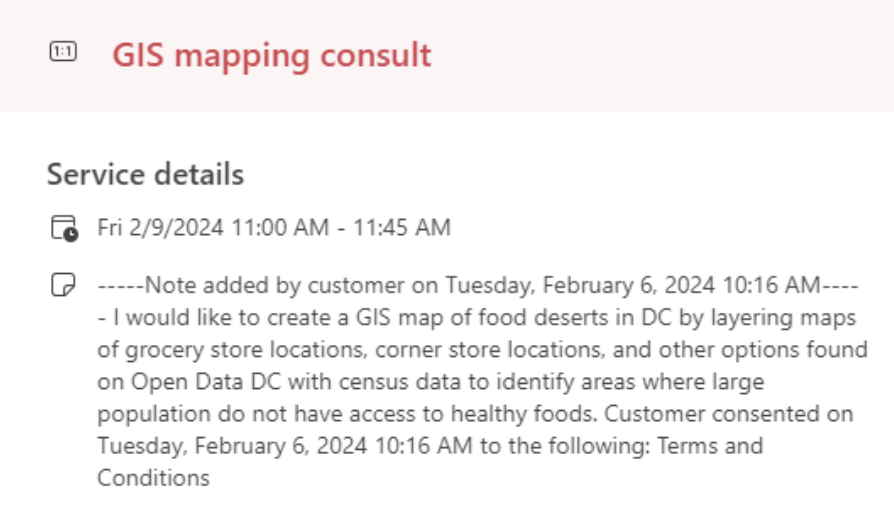
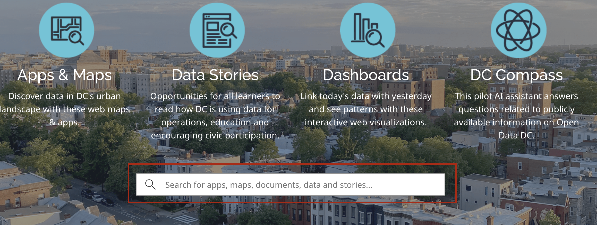

Group 2 [Portals]

Consider this request a student made to the Harvard Map Collection for help with finding GIS data in 2024:
“I would like to create a GIS map of food deserts in DC by layering maps of grocery store locations, corner store locations, and other options found on Open Data DC with census data to identify areas where large populations do not have access to healthy foods.”
Where is a good place to get started searching for food desert data in DC?
- In a web browser, search for “GIS open data portal DC”.
- Visit
opendata.dc.gov.

- Scroll down and find the search bar that says “Search for apps, maps, documents, data and stories…”. Place your cursor in the search bar and click
Enter. This will bring you to a results page with all items, and filters you can use to refine your search.
- Under
TypeselectFeature Service. It is a trend that many open data portals host GIS data layers as streaming “feature services”, which are displayed in web maps. From these feature service landing pages, you can often download the data in various common geospatial formats, such asshapefileorgeoJSON. Usingtypefacets and filtering data byshapefile,geojsons,point, line, or polygonorfeature serviceare a good way to tell the search portal you are looking for geospatial data, as opposed to spreadsheets, PDFs, or other kinds of information.
- Click a random result, and observe how the feature service landing page is structured. What are your observations? How would you download this data, in order to bring it into a GIS?
- Return to the results list, filtered by
Feature Service. Search for relevant termsfood,grocery,corner stores, and observe which datasets are available which could be useful to the project.
Be ready to demo this process to the group.